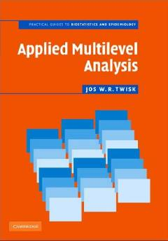

AMTibbiyot tadqiqotchilari uchun ko'p darajali tahlil usullari bo'yicha amaliy qo'llanma.
Ushbu kitob tibbiyot va epidemiologiya sohasidagi tadqiqotchilar uchun ko'p darajali tahlil (multilevel analysis) usullarini amaliy tushuntirib beradi. Muallif murakkab matematik nazariyalardan qochib, tadqiqot savollariga javob topish uchun kompyuter dasturlari va amaliy misollardan foydalanishga urg'u beradi.